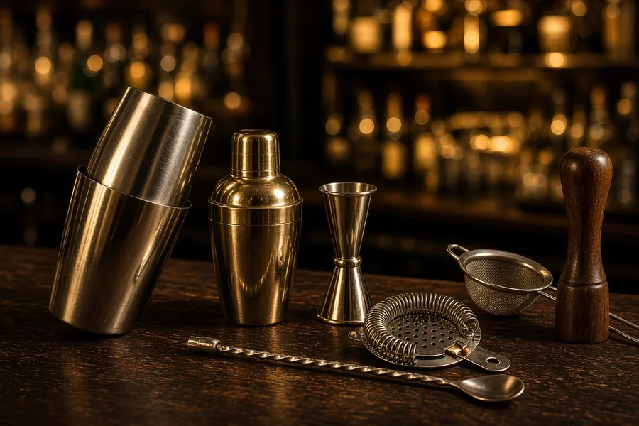

Phần 01
Dụng Cụ Quầy Bar & Phân Loại Ly

Mình thấy chọn đúng dụng cụ giúp thao tác mượt hơn và dễ vệ sinh hơn nhiều. Dưới đây là những món mình hay dùng và cách mình nghĩ về chúng.
Bộ dụng cụ mình thường xuyên dùng
- Boston Shaker (2 mảnh): Cốc inox lớn + cốc nhỏ. Kín tốt, dễ rửa, lực lắc mạnh. Mình thích dùng cái này khi làm nhiều ly.
- Cobbler Shaker (3 mảnh): Có sẵn nắp lọc. Tiện khi pha ở nhà hoặc mới bắt đầu, không cần lọc riêng.
- Jigger: Ly đong 2 đầu (thường 30/60 ml có vạch nhỏ). Mình luôn đong trước khi rót để ly nào cũng ổn định.
- Barspoon: Thìa cán dài xoắn. Dùng khuấy nhẹ trong mixing glass hoặc hỗ trợ rót phân tầng.
Lọc và sơ chế
- Hawthorne Strainer: Lọc có lò xo, đậy miệng Boston Shaker để giữ đá lớn lại.
- Julep Strainer: Dạng muỗng đục lỗ, dùng riêng khi khuấy trong mixing glass.
- Fine Strainer: Rây lưới mịn. Mình hay double-strain để loại vụn đá và tép chanh, ly nhìn sạch hơn.
- Muddler: Chày dầm. Dầm nhẹ thảo mộc hoặc trái cây để lấy tinh dầu, tránh dầm nát.
Chọn ly sao cho phù hợp
- Rocks / Old Fashioned: Thấp, đáy dày. Mình hay dùng cho cocktail có đá khối lớn như Negroni, Old Fashioned.
- Highball / Collins: Cao, ống. Phù hợp đồ uống nhiều mixer có ga (Mojito, Paloma…).
- Coupe / Martini: Có chân. Giúp tay không làm ấm rượu, dùng cho thức uống served up.